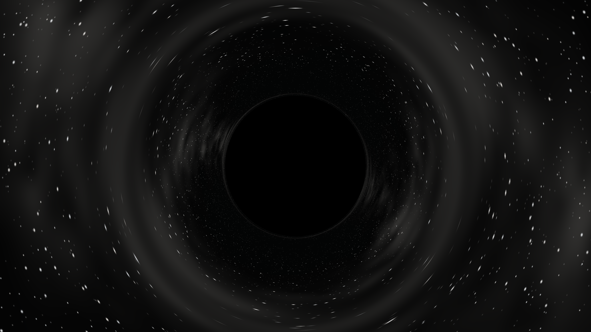
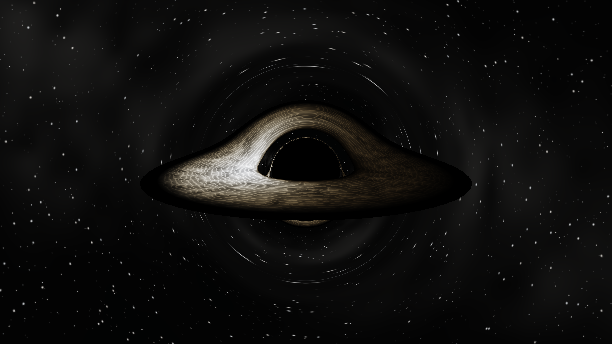
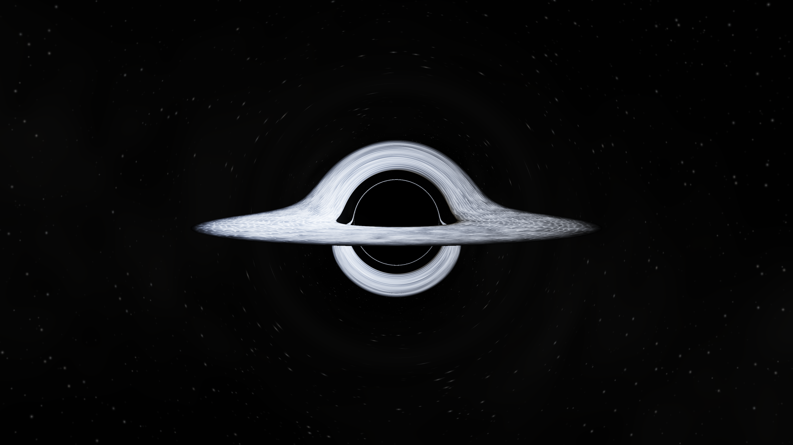
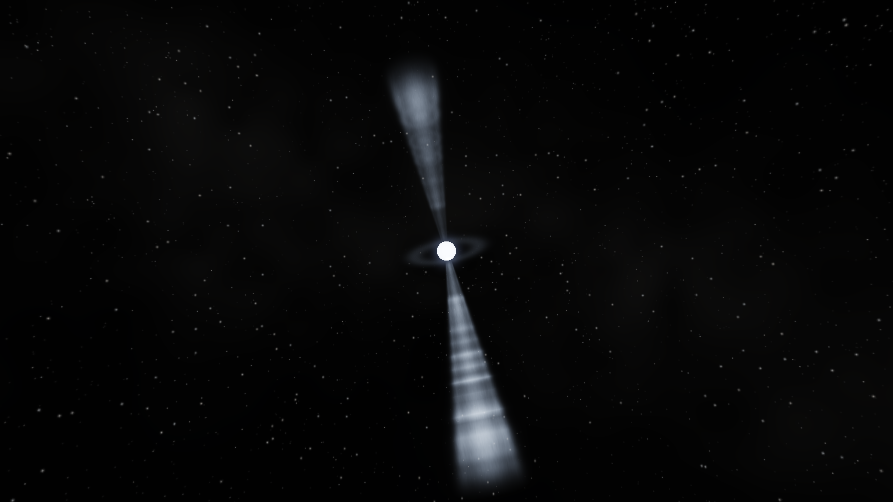
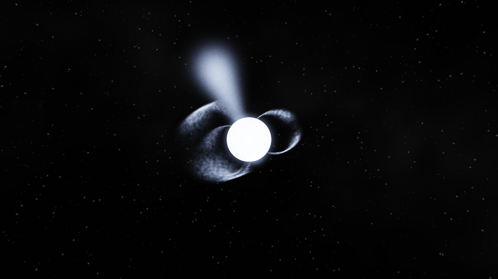
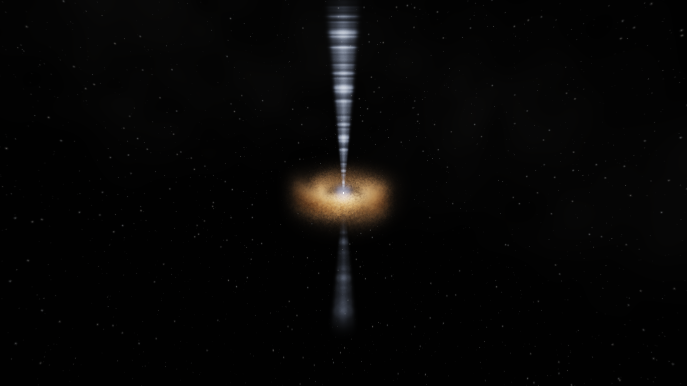
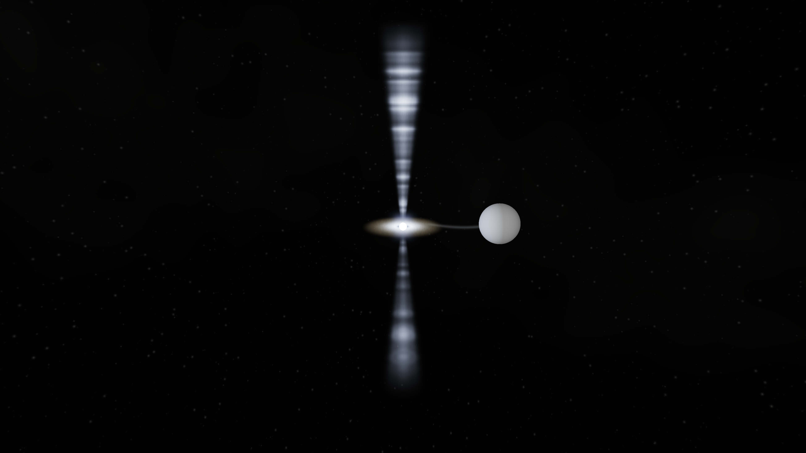
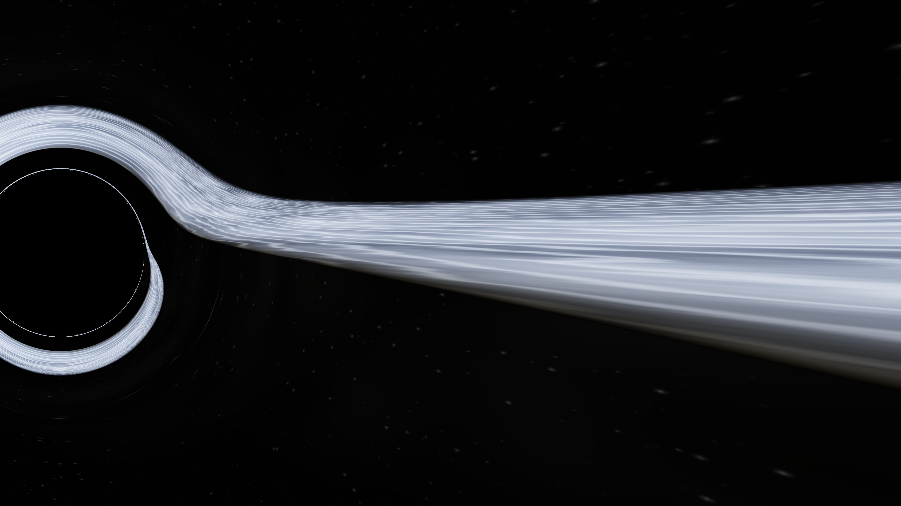

Тихая чёрная дыра

Чёрная тень и ахроматическое линзирование звёздного поля. Без отражающей поверхности и зелёной светящейся оболочки.
Реальные рендеры прототипов, 3840×2160. Спектральный отклик и художественные допущения описаны в отчёте.

Чёрная тень и ахроматическое линзирование звёздного поля. Без отражающей поверхности и зелёной светящейся оболочки.

Тёплый диск, плотные тёмные области, белое внутреннее свечение и гравитационные изображения обратной стороны. Реалистичная переработка композиции интро.

Горячий асимметричный диск, повторные изображения возле критической кривой и глубокая тень. Численные геодезические Шварцшильда.

Компактное ослепительное ядро, наклонённая вращающаяся ось, неоднородные узкие струи и слабая оболочка. Излучение дополнено сенсорной визуализацией.

Несколько локальных плазменных петель, горячие полярные участки и направленный выброс. Без декоративной клетки силовых линий.

Почти неразрешимое яркое ядро, неоднородный поглощающий пылевой тор с самозатенением и протяжённые асимметричные джеты.

Звезда-донор, узкий поток вещества, компактный горячий диск и две коллимированные струи. Другая шкала размеров, чем у квазара.

Наблюдение снаружи горизонта в сторону его края. Искривлённые изображения диска и растущая тень; не вымышленный интерьер внутри чёрной дыры.